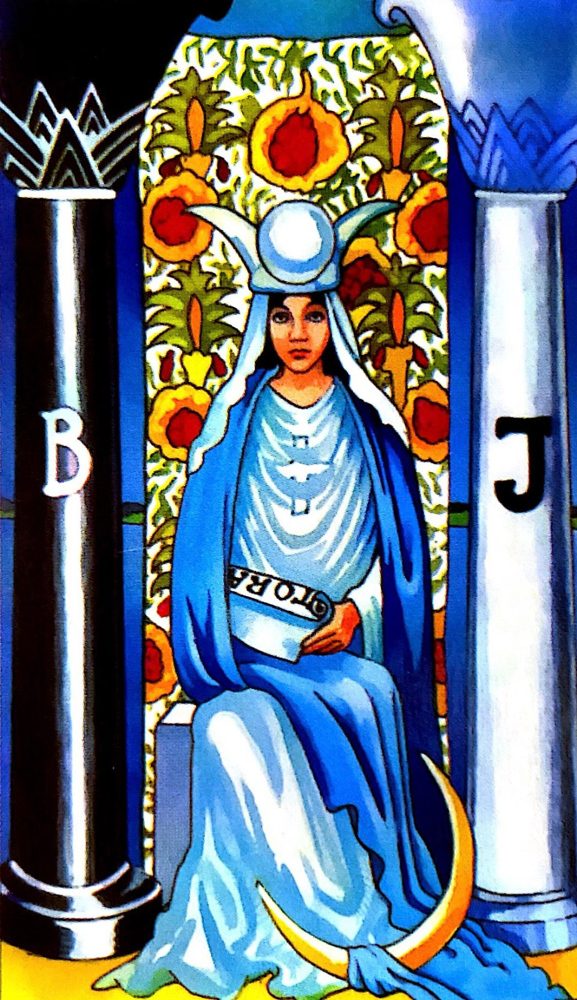

🔮偉特塔羅手把手教學

👰🏼 2 女祭司 THE HIGH PRIESTESS
🃏牌面： 女祭司端坐在石凳上，手上拿著猶太教聖經，頭戴白色頭冠，身穿藍白相襯的長袍，象徵純潔與嫻靜。裙角的月亮，象徵智慧和直覺。
➡️正位：
智慧、知性、敏銳的洞察力、理性、直覺。
愛情💗：
有伴者注重心靈或精神方面的交流，柏拉圖式的戀情，雙方都保持著理智。單身者喜歡把愛意藏在心裡。
事業學業🤓：
擁有明確的目標，且求知慾旺盛，富責任感。
➡️逆位：
過於壓抑、粗心大意、不理性、神經質。
愛情💗：
在感情中過於被動，常常採取暗戀的方式而錯失機會。或指雙方溝通不理性、缺乏溝通。有一方有感情潔癖，而錯失良機。
事業學業🤓：
容易感到焦慮，無法集中工作或學習，或無法學以致用。
實戰演練題： 對方如何看待我們之間的關係？（抽到女祭司正位）
點擊看解答
解答：
對方對你是有感情的，但他非常理智的看待這段關係，對於感情相當含蓄、謹慎，他對待這對感情採被動的態度。